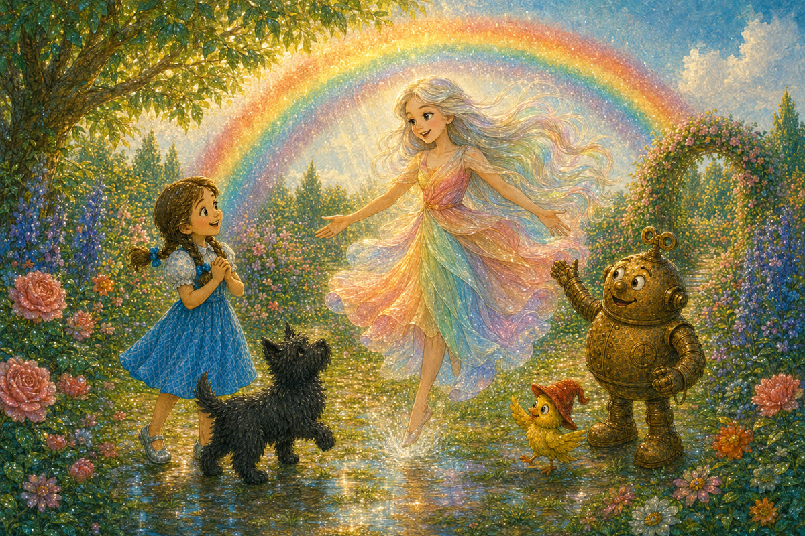
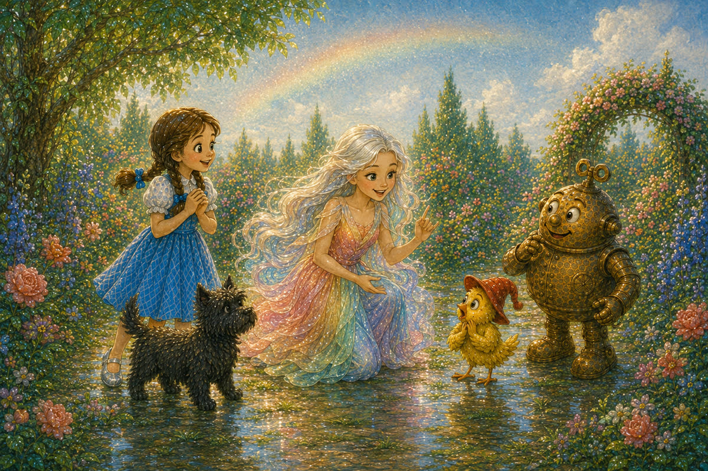
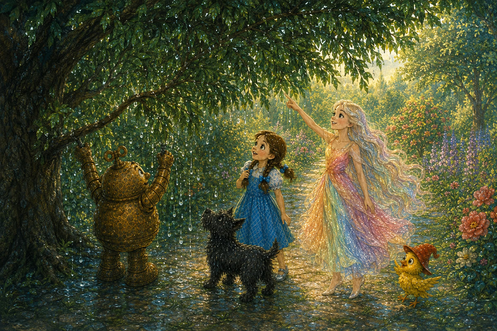
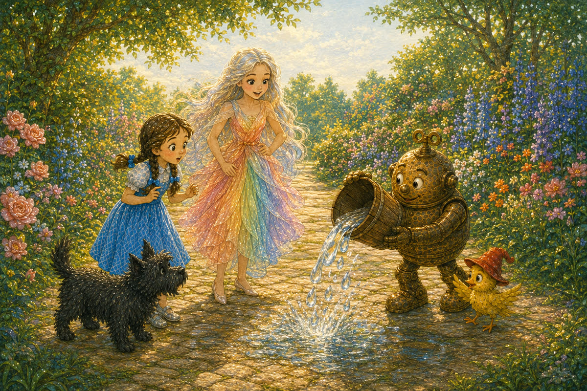
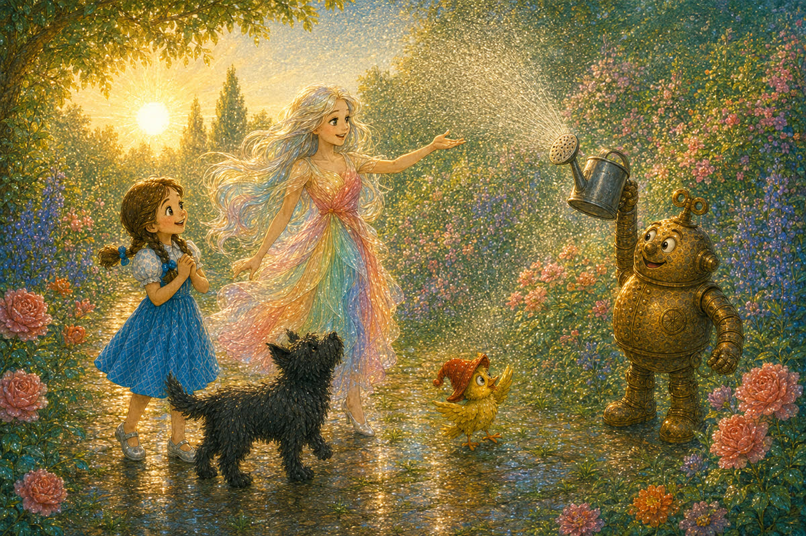
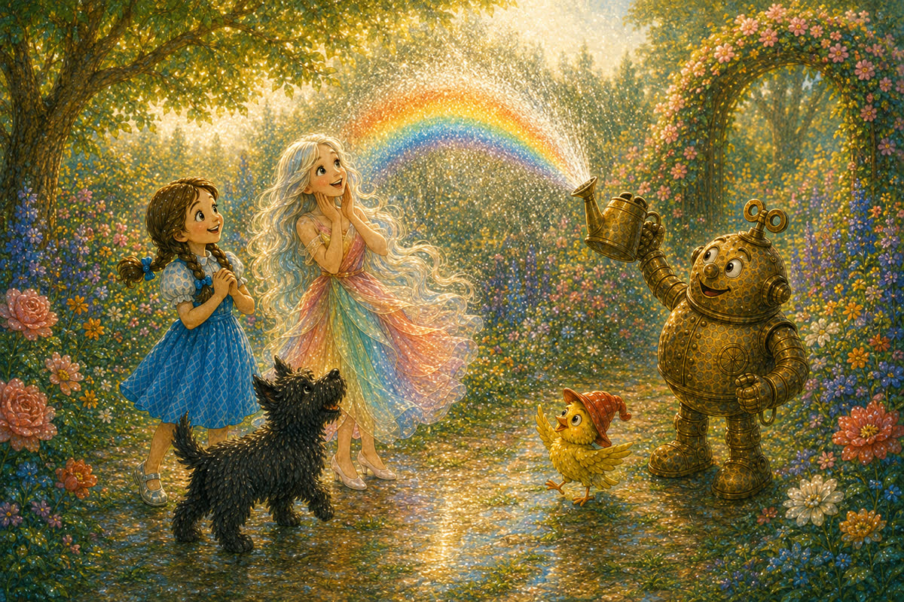
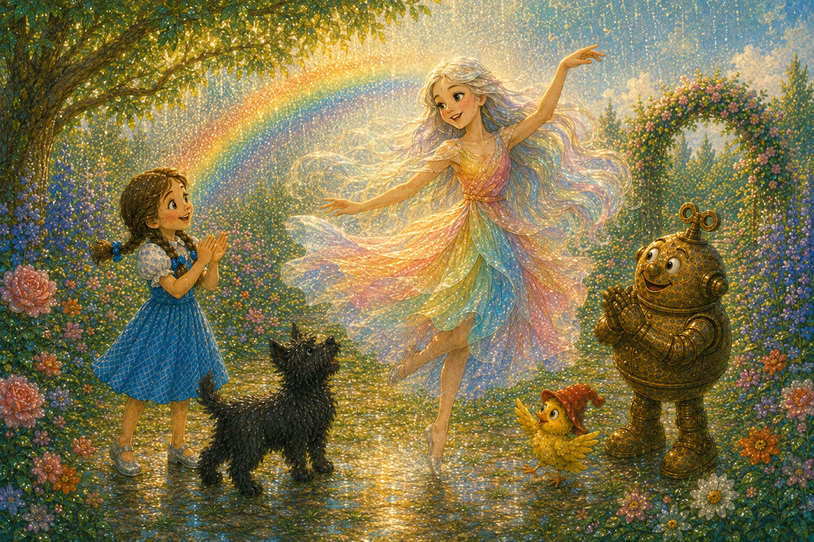

Pahina 1
Pagkatapos ng ulan, lumabas si Dorothy sa hardin.
May malaking bahaghari sa langit.
Biglang bumaba mula rito ang isang munting dalagang nakasuot ng makulay na damit.
Isang bagong kuwento sa Lupain ng Oz
Basahin ang tatlong bagong pahina bawat araw. Bago magpatuloy, balikan muna ang mga pahinang nabasa na.

Pagkatapos ng ulan, lumabas si Dorothy sa hardin.
May malaking bahaghari sa langit.
Biglang bumaba mula rito ang isang munting dalagang nakasuot ng makulay na damit.
“Ako si Polychrome, ang Anak ng Bahaghari,” sabi niya.
Magaan siyang sumayaw sa basang damo.
Masayang sinalubong siya ng mga kaibigan.

Unti-unting nawala ang malaking bahaghari.
“Gusto ko pang makita ang mga kulay,” sabi ng ibon.
“Gagawa tayo ng munting bahaghari,” sagot ni Polychrome.

Inalog ni Tik-Tok ang basang sanga sa ilalim ng puno.
Maraming patak ang nahulog.
Ngunit walang sikat ng araw doon.
Walang bahagharing nakita.
“May tubig, pero walang sikat ng araw,” paliwanag ni Polychrome.
“Kailangan natin ang pareho.”
Tumingin sila sa maliwanag na landas.

Sa landas, ibinuhos ni Tik-Tok ang tubig mula sa timba.
Malalaki ang mga patak at mabilis na bumagsak.
Basa ang lupa, ngunit walang kulay sa hangin.
“Maliliit na patak ang kailangan,” sabi ni Dorothy.
Nakakita si Toto ng pandilig na may maliliit na butas.
Agad siyang tumakbo roon.

Itinaas ni Tik-Tok ang pandilig.
Dumaan ang tubig sa maraming maliliit na butas.
Lumutang sa hangin ang pinong ambon.
“Dito tayo titingin,” sabi ni Polychrome.
Nasa likod nila ang maliwanag na araw.
Tumingin silang lahat sa ambon.

Biglang lumitaw ang munting bahaghari.
Nakita nila ang pula, kahel, dilaw, berde, bughaw, indigo, at lila.
Masayang umawit ang ibon.
Lumipat si Dorothy sa kabilang tabi ng ambon.
Nawala ang mga kulay.
Bumalik siya sa tamang lugar, at nakita niya ang bahaghari muli.

“Tubig, araw, at tamang lugar!” sabi ni Dorothy.
Ngumiti si Polychrome at sumayaw sa tabi ng munting bahaghari.
Pumalakpak sina Dorothy at Tik-Tok.
Pag-usapan natin